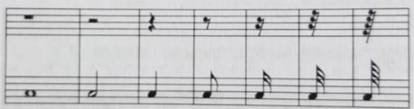

Rytmy, Kropki i Pauzy
Rytm i podział wartości rytmicznych
Rytm to czynnik, który odpowiada za regulację następstw dźwięków w utworze w czasie, i organizację ich w określone grupy.
To znaczy, że odpowiada za to, ile dane dźwięki mają trwać, i dzieli je na przyjęte grupy.
Podstawowe wartości są wynikiem podziału dwójkowego, który jest podstawą stosunków rytmicznych.
Znaczy to zwyczajnie tyle, że każda wartość dzieli się na dwie następne, krótsze o dokładnie połowę.
Przykładowo w ten sposób cała nuta dzieli się na dwie półnuty, półnuta na dwie ćwierćnuty, ćwierćnuta na dwie ósemki itd.
Nieregularny podział wartości rytmicznych
Jednak oprócz tego regularnego podziału na dwie, cztery czy osiem części, istnieje także podział nieregularny. Grupy, które powstały w wyniku takiego podziału, nazywamy grupami niemiarowymi.

Jeżeli nutę podzielimy na trzy równe części za miast dwóch, otrzymamy triolę.
Jest to najczęściej używany przykład nieregularnego podziału.
Triole zajmują dokładnie tyle samo czasu, co dwie regularne nuty tej samej wartości.
Przykładowo: jeśli całą nutę, którą w podziale regularnym dzielimy na dwie półnuty, rozbijemy na trzy części, powstanie triola półnutowa, w której wszystkie trzy nuty trwają tyle samo, a razem trwają dokładnie tyle, co cała nuta.
Ważne jest zaznaczenie takiego nieregularnego podziału, co zapisuje się cyfrą 3 umieszczoną obok wiązania danej grupy.
W taki sam sposób, jak dzielimy wartości na triole, możemy je podzielić także na pięć, sześć czy siedem równych części. Otrzymujemy w ten sposób odpowiednio kwintole, sekstole i septole.
Wydłużenie wartości kropką
Można także przedłużyć trwanie danej wartości rytmicznej, umieszczając przy niej kropkę. Zapisuje się ją przy główce nuty z jej prawej strony. Przedłuża ona daną wartości o jej połowę.
Czasami stosuje się wręcz dwie kropki przy nucie. Wtedy druga kropka przedłuża nutę o jej jedną czwartą, inaczej tak jakby połowę z połowy.
Tak samo jeśli dodamy jeszcze jedną kropkę, to ta trzecia będzie przedłużeniem o jeszcze mniejszą wartość- jak można się domyślić, analogicznie kolejną połowę poprzedniej kropki, czyli jedną ósmą pierwotnej wartości.
Pauzy
Niezmiernie ważną częścią rytmów są także pauzy. Są to znaki graficzne, które odpowiadają wartościom nut, tylko zastępują dźwięki ciszą; wyznaczają długość przerwy między nimi. Skoro odpowiadają wartościom różnych grup rytmicznych, to wyróżniamy takie same ich rodzaje; mamy zatem pauzę całonutową, półnutową, ćwierćnutową, ósemkową itd.  Wszystko, co możemy zrobić z rytmami, wszystkie ich sekwencje czy modyfikacje, odnoszą się także analogicznie do pauz zastępujących te wartości.